Survey, causal and statistical methods
Source:vignettes/statistical-methods.Rmd
statistical-methods.RmdComplex survey estimation
A survey respondent stands for many people, and not the same number
each: the final weight says how many. The weights fix the estimate; the
design (how the sample was drawn) fixes its uncertainty, and ignoring it
usually understates the interval. svydes() records the
design, svyest() gives means, totals, proportions and
ratios with design-based standard errors, and svycmp()
tests differences between groups.
Two ways to the variance
Public-use files from Statistics Canada and Health Canada ship replicate weights: hundreds of alternative weight columns, each a resampled version of the design. The estimate is recomputed under each and the spread of those estimates is the variance. Other surveys ship the strata and primary sampling units (PSUs), and the variance comes from Taylor linearization.
set.seed(1)
n <- 600
d <- data.frame(region = sample(c("north", "south", "east"), n, replace = TRUE),
age = sample(c("15-24", "25-49", "50+"), n, replace = TRUE),
used = rbinom(n, 1, 0.3), drinks = rpois(n, 3), w = runif(n, 40, 160))
# a stratified design: variance by linearization
lin <- svydes(d, w = "w", strata = "region")
lin
#> Survey design: 600 respondents, weights summing to 60,110
#> Variance: Taylor linearization, 3 strata, 600 PSUs
# a replicate design: 200 bootstrap weights, made here by resampling within region
reps <- sapply(1:200, function(r) {
m <- numeric(n)
for (g in unique(d$region)) {
i <- which(d$region == g)
m[i] <- tabulate(sample(length(i), replace = TRUE), length(i)) * length(i) / (length(i) - 1)
}
d$w * m
})
repdes <- svydes(d, w = "w", reps = reps, type = "bootstrap")
repdes
#> Survey design: 600 respondents, weights summing to 60,110
#> Variance: 200 replicate weights, bootstrap; scale 0.005, centred on the full-sample estimateEstimates by domain
A domain (a region, an age group) is estimated inside the whole design: a respondent outside it counts zero, but stays in the design. That is what makes the subgroup’s variance right.
e <- svyest(repdes, d, "used", by = "age", stat = "proportion", lvls = "1")
e
#> Survey proportion of used by age (bootstrap variance, 95% wilson interval)
#> age level estimate se lower upper cv n flag
#> 15-24 1 0.3681 0.03560 0.3018 0.4398 9.671 206 NA
#> 25-49 1 0.2967 0.03063 0.2375 0.3635 10.324 199 NA
#> 50+ 1 0.2333 0.03067 0.1790 0.2982 13.147 195 NA
plot(e)
svyest(lin, d, "drinks", by = "region")
#> Survey mean of drinks by region (linearization variance, 95% wald interval)
#> region estimate se lower upper cv n flag
#> east 2.857 0.1245 2.614 3.101 4.356 186 NA
#> north 2.822 0.1254 2.577 3.068 4.442 220 NA
#> south 3.046 0.1282 2.794 3.297 4.210 194 NAProportions get the modified Wilson interval of SAS PROC SURVEYFREQ (the effective sample size , adjusted for the design’s degrees of freedom and never above ); it stays inside 0 to 100% and behaves near the ends. Domains with fewer than 30 respondents are flagged, the rule Health Canada uses to suppress estimates in its data tool; here nothing is withheld, and the flag travels with the row.
Comparing groups
Two overlapping intervals do not mean two groups are the same, and
two separate intervals leave out the covariance between the estimates.
svycmp() takes the difference within the design:
cmp <- svycmp(repdes, d, "used", by = "region", stat = "proportion", lvls = "1",
ref = "north")
cmp
#> Survey proportion of used against north (95% interval)
#> domain level estimate reference difference se lower upper p_value
#> east 1 0.3074 0.3082 -0.000804 0.04468 -0.08838 0.08677 0.9856
#> south 1 0.2862 0.3082 -0.021992 0.05139 -0.12272 0.07874 0.6687
plot(cmp)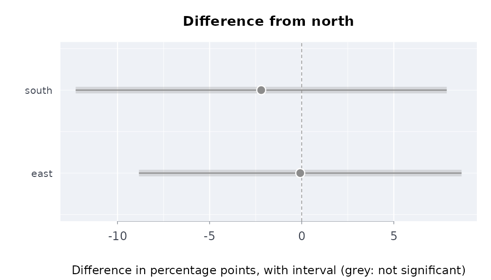
The Canadian Substance Use Survey, against the published figures
CSUS 2023 ships 1,000 mean bootstrap weights, each
the average of 12 bootstrap weights, so the bootstrap variance is
multiplied by 12 (Health Canada’s technical notes; the same as Fay’s BRR
with
).
The public-use file and its weights are on data.rmorie.com (sign in once
with rmbl login), where dload() checks each
table against the SHA-256 its manifest lists:
a <- dload("csus_2023/pumf") # 36,180 respondents
b <- dload("csus_2023/bootstrap") # PUMF_ID, WGT_PUMF and BWGT1 ... BWGT1000Or, without signing in, from Health Canada’s own copies on the Open Government Portal (the same files, 612 MB for the weights):
src <- "https://open.canada.ca/data/dataset/65e2d45e-efc6-4c29-9a9b-db59bc96aa0e/resource"
pumf <- file.path(tempdir(), "csus2023_pumf_final.csv")
bwt <- file.path(tempdir(), "csus2023_pumf_bwt.csv")
bldl(paste0(src, "/c2c1795b-4501-49ba-9dd1-5b8360cc3b2e/download/",
"csus2023_pumf_final.csv"), pumf)
bldl(paste0(src, "/7d19d47a-5f42-4447-b735-aa4d677ad5ed/download/",
"csus2023_pumf_bwt.csv"), bwt)
a <- utils::read.csv(pumf)
b <- utils::read.csv(bwt)
# With rmorie installed, the same two files come from
# rmorie::morie_load_dataset() with the keys "cu23mf" and "cu23bt".Either way, the design and the lifetime cannabis question are:
a$can <- ifelse(a$CAN_Q01 < 0, NA, a$CAN_Q01) # -8: not stated
des <- svydes(a, w = "WGT_PUMF", reps = b, id = "PUMF_ID",
type = "meanboot", msize = 12)
svyest(des, a, "can", stat = "proportion", lvls = c("1", "2"))Run on 13 October 2026 (1.6 seconds for the 1,000 replicates), against Health Infobase’s published table:
| Lifetime cannabis use | Published % | Published 95% CI | Here % | Here 95% CI |
|---|---|---|---|---|
| Yes, just once | 9.907782 | 9.544212 to 10.28363 | 9.907816 | 9.522047 to 10.30743 |
| Yes, more than once | 53.192923 | 52.677340 to 53.70783 | 53.193086 | 52.677503 to 53.70799 |
The percentages agree to the fourth decimal, and so does the second interval, whose design effect is below one so the interval is the plain Wilson one at the 36,024 respondents. The first interval is slightly wider here: Health Canada computed from its master file, and the public-use weights are not identical to it (the percentages differ in the fifth significant digit).
When you only have the published table
Often there is no microdata, only the published table: an estimate
and its 95% limits for each group. The limits carry the design. A
standard error is the limits’ width over
,
and it includes the design effect of the survey’s weights and clusters.
scests() puts each Statistics Canada estimate beside its
limits. indgap(), dstntst() and
ordcmp() then compare groups from them.
They treat the groups as independent samples. Disjoint domains of one survey nearly are, but not exactly, since they share strata and clusters. The exact comparison needs the bootstrap weights, which Statistics Canada holds in its Research Data Centres.
Perceived mental health of First Nations, Metis and Inuit adults living off reserve, 2019/2022 (table 13-10-0924-01):
h <- indiex("health")
mh <- h[h$period == "2019/2022" & h$age == "Total, 18 years and over" &
h$indicator == "Perceived mental health, very good or excellent", ]
indgap(mh, "group", "estimate", "lower", "upper", qual = "quality")[
, c("group", "difference", "diflo", "difup")]
#> group difference diflo difup
#> 1 First Nations -15.7 -18.53593 -12.864070
#> 2 Métis -8.7 -11.58531 -5.814692
#> 3 Inuit -13.7 -20.16568 -7.234321
dstntst(mh[mh$group != "Non-Indigenous", ], "group", "estimate", "lower", "upper")
#> Distinctions test across 3 groups: Q = 11.97 on 2 df, p = 0.00252, I^2 = 83%
#> Pooled (inverse-variance) 49.11; the groups differ: report each one, not the pooled figureLinearization or replicates, the same answer
On the same data the two routes agree closely when the replicates come from the same design:
rbind(linearization = svyest(lin, d, "drinks")[, c("estimate", "se")],
bootstrap = svyest(repdes, d, "drinks")[, c("estimate", "se")])
#> estimate se
#> 2.906 0.07295
#> 2.906 0.07324Every variance formula here is checked in the package tests against the survey package to machine precision: linearized means, totals, ratios, proportions and domains with a finite population correction; JK1, bootstrap and Fay replicate designs; and differences between domains.
Causal effects with cross-fitted double machine learning
plrcf() estimates the average effect of a treatment on
an outcome when the treated and the untreated differ in measured ways
(confounders). It fits the partially linear model
by the double machine learning recipe of Chernozhukov et al. (2018):
the outcome and the treatment are each predicted from the confounders
on folds the row was not part of (cross-fitting), and
is the regression of the outcome residuals on the treatment residuals
(DML2), with a sandwich standard error. When the effect is the same for
everyone,
is the average treatment effect (ATE); otherwise it is a
variance-weighted average of the individual effects.
exprspplr() bootstraps the same estimator for a continuous
exposure (see the air-pollution vignette). The nuisances
and
are ordinary least squares fits, so
is consistent when they are linear in the columns given; add squares,
interactions or splines as columns where they are not.
A known effect, recovered
Confounding biases the simple comparison; the cross-fitted estimate
removes it. Here the true effect of d on y is
2, and x1 drives both:
set.seed(42)
n <- 2000
sim <- data.frame(x1 = rnorm(n), x2 = rnorm(n))
sim$d <- rbinom(n, 1, plogis(1.5 * sim$x1))
sim$y <- 2 * sim$d + 3 * sim$x1 + sim$x2 + rnorm(n)
mean(sim$y[sim$d == 1]) - mean(sim$y[sim$d == 0]) # biased by x1
#> [1] 5.373073
fit <- plrcf(sim, "y", "d", c("x1", "x2"))
fit$ate
#> [1] 2.039439
fit$ate + c(-1.96, 1.96) * fit$se
#> [1] 1.938179 2.140699The NSW job-training experiment, and what observational data can recover
LaLonde (1986) took the National Supported Work Demonstration, a
randomised job-training programme of the 1970s, and asked whether the
econometric methods of the day could recover its experimental effect on
1978 earnings when the randomised controls are replaced by a survey
sample (the PSID). Dehejia and Wahba (1999) kept the men with 1974
earnings: 185 treated, 260 randomised controls, and 2,490 PSID-1
comparison men. The three files are on data.rmorie.com
(rmbl login once), checked against the SHA-256 the manifest
lists:
Or, without signing in, from Rajeev Dehejia’s own pages (whitespace-separated text):
cols <- c("treat", "age", "educ", "black", "hisp", "married", "nodegree", "re74", "re75", "re78")
nber <- function(f) {
dest <- file.path(tempdir(), f)
bldl(paste0("https://users.nber.org/~rdehejia/data/", f), dest)
stats::setNames(utils::read.table(dest), cols)
}
tr <- nber("nswre74_treated.txt")
ct <- nber("nswre74_control.txt")
ps <- nber("psid_controls.txt")The PSID men are older, more often married and earned about nine times as much before the programme; the randomised controls look like the treated:
| Mean | age | educ | black | married | nodegree | re74 | re75 |
|---|---|---|---|---|---|---|---|
| Treated | 25.82 | 10.35 | 0.84 | 0.19 | 0.71 | 2,095.57 | 1,532.06 |
| Randomised controls | 25.05 | 10.09 | 0.83 | 0.15 | 0.83 | 2,107.03 | 1,266.91 |
| PSID controls | 34.85 | 12.12 | 0.25 | 0.87 | 0.31 | 19,428.75 | 19,063.34 |
The experimental benchmark, and the same question asked of the observational sample:
x <- c("age", "educ", "black", "hisp", "married", "nodegree", "re74", "re75")
exp <- rbind(tr, ct)
obs <- rbind(tr, ps)
mean(tr$re78) - mean(ct$re78) # the experiment
mean(tr$re78) - mean(ps$re78) # treated against the PSID, unadjusted
plrcf(exp, "re78", "treat", x)
plrcf(obs, "re78", "treat", x)
plrcf(obs, "re78", "treat", x, kfol = 10, seed = 2)Run on 15 October 2026 (1982 US dollars of 1978 earnings):
| Sample and estimator | Effect | Standard error | 95% interval |
|---|---|---|---|
| Experiment, difference in means | 1,794.3 | ||
Experiment, plrcf()
|
1,695.9 | 680.8 | 361.5 to 3,030.2 |
| Treated vs PSID, difference in means | -15,204.8 | ||
Treated vs PSID, plrcf()
|
618.3 | 791.1 | -932.3 to 2,168.9 |
Treated vs PSID, plrcf(), 10 folds, seed 2 |
748.4 | 777.5 | -775.5 to 2,272.3 |
Adjusting for the eight pre-programme covariates turns a
fifteen-thousand-dollar penalty into a small positive effect whose
interval covers the experimental one, though it sits well below it and
is far less precise. Two things limit it. The nuisances are linear, so
the large earnings gap is adjusted for only as a straight line; and the
overlap is thin: most PSID men earned more before the programme than
almost any treated man, so the comparison rests on the few who look like
them. Dehejia and Wahba show that trimming the comparison group to the
region of common support (on an estimated propensity score) brings the
observational estimate close to the experiment; with
plrcf(), restrict obs to that region before
fitting. The cross-fit split moves the estimate by about a sixth of a
standard error, which is why the seed and the number of folds are
arguments.
Overlap and balance
Two checks belong with every weighting estimate: whether the two groups overlap (each person has a real chance of either treatment) and whether weighting balances the covariates. On simulated data, where the true effect is 3:
set.seed(7)
n <- 1500
d <- data.frame(age = runif(n, 18, 70), income = rnorm(n))
d$t <- rbinom(n, 1, plogis(-2 + 0.04 * d$age + 0.5 * d$income))
d$y <- 10 + 3 * d$t + 0.2 * d$age + d$income + rnorm(n)
fit <- aipwcf(d, "y", "t", c("age", "income"), lrn = "ols")
fit
#> Cross-fitted AIPW, ATE: 1500 rows, 684 treated
#> estimate se lower upper p_value
#> 3.071 0.05606 2.961 3.181 0
#> Propensities from 0.086 to 0.903; 0 clipped
plot(fit)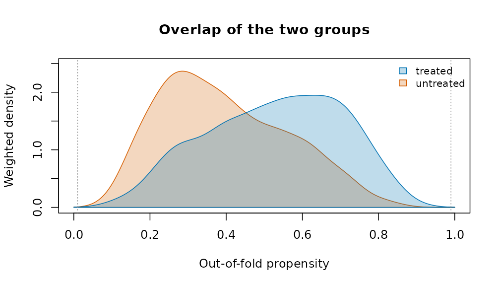
plot(fit, type = "estimate")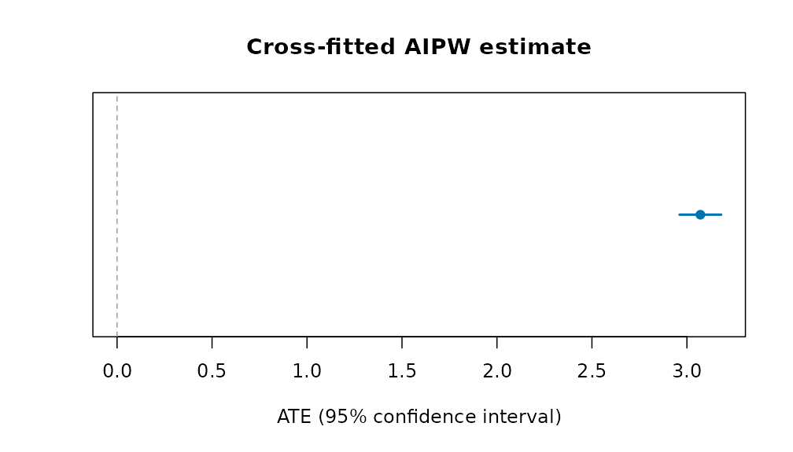
pr <- attr(fit, "propensity")
e <- pmin(pmax(pr$propensity, 0.01), 0.99)
d$ipw <- ifelse(d$t == 1, 1 / e, 1 / (1 - e))
plot(baltab(d, "t", c("age", "income")),
after = baltab(d, "t", c("age", "income"), w = "ipw"))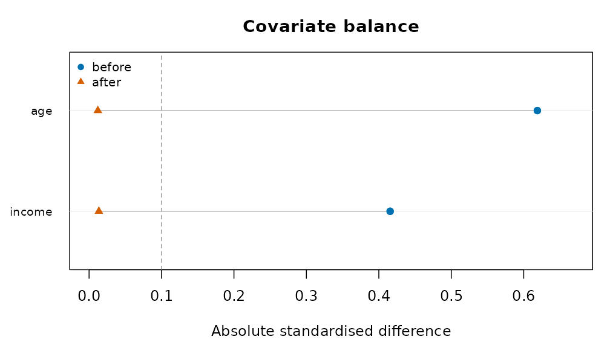
The groups overlap where both curves have mass; after weighting, both covariates fall below the 0.1 line.
Indigenous examples
The person-level questions this vignette is about (does a strong
sense of belonging go with better mental health once circumstances are
held equal?) need the survey microdata, which Statistics Canada
distributes as a public use file; aipwcf() with
design = svydes(...) takes its bootstrap weights directly.
The published tables bundled with the package support the group-level
questions; for those see vignette("applied-analyses"). A
comparison of the published estimates themselves:
hi <- indiex("health")
x <- hi[hi$period == "2019/2022" & hi$age == "Total, 18 years and over" &
hi$indicator == "Perceived mental health, very good or excellent", ]
indgap(x, "group", "estimate", "lower", "upper", qual = "quality")[
, c("group", "estimate", "refest", "difference", "diflo",
"difup")]
#> group estimate refest difference diflo difup
#> 1 First Nations 45.8 61.5 -15.7 -18.53593 -12.864070
#> 2 Métis 52.8 61.5 -8.7 -11.58531 -5.814692
#> 3 Inuit 47.8 61.5 -13.7 -20.16568 -7.234321References
Chernozhukov, V., Chetverikov, D., Demirer, M., Duflo, E., Hansen, C., Newey, W. and Robins, J. (2018). Double/debiased machine learning for treatment and structural parameters. The Econometrics Journal 21(1), C1-C68.
Dehejia, R. H. and Wahba, S. (1999). Causal effects in nonexperimental studies: reevaluating the evaluation of training programs. Journal of the American Statistical Association 94(448), 1053-1062.
LaLonde, R. J. (1986). Evaluating the econometric evaluations of training programs with experimental data. American Economic Review 76(4), 604-620.
Evaluating a policy from administrative panels
A reform reaches some places before others: a new criminal procedure
rolled out district by district, a policing program adopted city by
city, a ward boundary redrawn. Agencies publish the outcomes as counts
or rates by place and period. This vignette covers the designs that turn
such a table into an estimate of the reform’s effect, with honest
uncertainty. Each estimator gives the same answer as the reference
implementation (fixest, did,
bacondecomp) to rounding error, and none of them needs a
package outside base R.
The examples use polex(): twenty districts in four
regions over 36 months, with a reform that reaches the regions in three
stages (months 13, 19 and 25) and never reaches the fourth. The numbers
are made up, with a known effect: the reform lowers the crime rate by
3.
p <- polex()
head(p)
#> district region month refmonth reformed population logpop crimes crmrate
#> 1 D01 R1 1 13 0 152152 11.93264 80 39.732
#> 2 D01 R1 2 13 0 152152 11.93264 56 42.708
#> 3 D01 R1 3 13 0 152152 11.93264 68 41.228
#> 4 D01 R1 4 13 0 152152 11.93264 68 43.296
#> 5 D01 R1 5 13 0 152152 11.93264 62 42.036
#> 6 D01 R1 6 13 0 152152 11.93264 59 40.197
#> arrrate
#> 1 15.394
#> 2 16.387
#> 3 16.043
#> 4 17.148
#> 5 15.443
#> 6 15.568Difference in differences
plndid() fits the two-way fixed-effects regression, with
standard errors clustered by unit (or any coarser grouping), and reports
the effect relative to the comparison units’ mean before the reform:
plndid(p, "district", "month", "crmrate", "reformed")
#> Difference in differences: 720 observations, 20 clusters
#> term estimate se lower upper t p_value
#> treated -3.232 0.1164 -3.475 -2.988 -27.76 7.66e-17
#> Effect relative to the comparison units' pre-period mean (26.52): -12.2%Before any model
cohtrnd() shows each adoption cohort’s outcome around
its adoption, scaled to 1 just before it:

Leads and lags
evstudy() estimates the effect period by period around
adoption. The leads (periods before adoption) should be near zero; the
joint test of that is printed below the table:
es <- evstudy(p, "district", "month", "crmrate", "refmonth", leads = 4, lags = 6)
es
#> Event study: 720 observations, 20 clusters
#> evtm estimate se lower upper t p_value
#> -4 0.07546 0.3433 -0.6431 0.794 0.2198 8.284e-01
#> -3 -0.31658 0.6646 -1.7076 1.074 -0.4763 6.393e-01
#> -2 0.41249 0.4327 -0.4931 1.318 0.9534 3.524e-01
#> -1 0.00000 0.0000 0.0000 0.000 NA NA
#> 0 -3.20456 0.4630 -4.1737 -2.235 -6.9207 1.344e-06
#> 1 -3.16882 0.4427 -4.0954 -2.242 -7.1580 8.390e-07
#> 2 -3.44256 0.5254 -4.5422 -2.343 -6.5522 2.836e-06
#> 3 -3.22263 0.5659 -4.4070 -2.038 -5.6951 1.725e-05
#> 4 -3.17395 0.3626 -3.9328 -2.415 -8.7537 4.291e-08
#> 5 -2.93264 0.3955 -3.7603 -2.105 -7.4158 5.072e-07
#> 6 -3.13434 0.4182 -4.0097 -2.259 -7.4940 4.362e-07
#> Leads jointly zero: F(3, 19) = 1.263, p = 0.3152
plot(es)
Staggered adoption
When districts adopt at different times, the two-way estimate uses
districts already treated as controls for later ones.
bacondcmp() shows how much weight those comparisons
get:
b <- bacondcmp(p, "district", "month", "crmrate", "reformed")
tapply(b$weight, b$type, sum)
#> earlier vs later later vs earlier treated vs never
#> 0.2093023 0.2093023 0.5813953
plot(b)
stgatt() avoids them: each cohort is compared only with
districts not yet treated (Callaway and Sant’Anna), or the regression
has a coefficient for every cohort and period (Wooldridge). The
bootstrap resamples whole districts:
s <- stgatt(p, "district", "month", "crmrate", "refmonth", reps = 99, seed = 1)
s$overall
#> estimate se lower upper
#> 1 -2.825844 0.3400471 -3.492324 -2.159364
plot(s)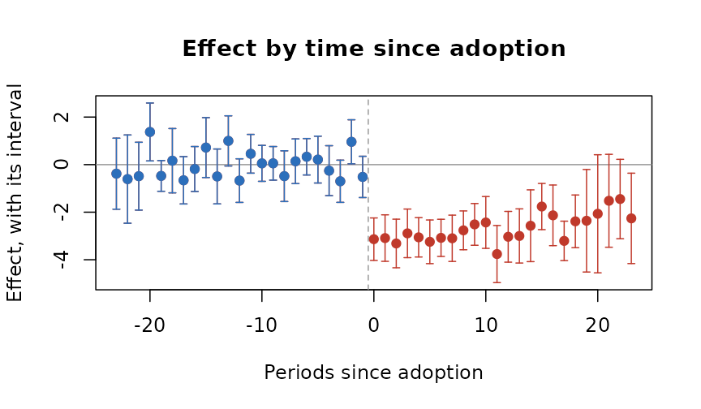
For a treatment that can switch off as well as on,
swtdid() compares the units that switch with those that do
not, in the period they switch, with a placebo one period earlier:
swtdid(p, "district", "month", "crmrate", "reformed", reps = 99, seed = 1)
#> term estimate se lower upper switchers
#> 1 effect -3.1355000 0.4555572 -4.028376 -2.2426243 15
#> 2 placebo -0.5169222 0.4429911 -1.385169 0.3513245 15Inference from the assignment
With four regions there are only 24 ways to assign the three stages
and the never-treated region. perminf() tries every one,
and gives the share at least as extreme as the real assignment. With two
outcomes it also gives Westfall and Young’s stepdown p-values, which
hold the chance of any false positive at the nominal level:
r <- perminf(p, "district", "month", c("crmrate", "arrrate"), "refmonth",
cl = "region")
r
#> outcome estimate statistic p_value pstpdn assignments exact
#> 1 crmrate -3.2316395 -19.516735 0.04166667 0.04166667 24 TRUE
#> 2 arrrate -0.2136969 -3.638159 0.12500000 0.12500000 24 TRUE
plot(r, type = "histogram")
loounit() checks that no single district drives the
estimate:

Several outcomes at once, in the style of a Stata event-study figure:
plotevgrid(list(
"Crime rate" = es,
"Arrest rate" = evstudy(p, "district", "month", "arrrate", "refmonth", leads = 4,
lags = 6)), style = "stata")
Counts
For counts, plnpois() gives the effect as a rate ratio,
with the population as exposure:
plnpois(p, "district", "month", "crimes", "reformed", offset = "logpop")
#> term estimate se rateratio lower upper p_value
#> 1 treated -0.092146 0.02220761 0.911972 0.8731289 0.9525431 3.334947e-05One treated place
synctl() builds a weighted average of untreated places
that tracks the treated one before the reform, and runs the same method
on each untreated place as a placebo:
p13 <- p[is.na(p$refmonth) | p$district == "D13", ]
sc <- synctl(p13, "district", "month", "crmrate", "D13", adopt = 13)
sc
#> Synthetic control for D13, adoption at 13
#> Donor weights: D12 0.408, D04 0.376, D20 0.185, D16 0.031
#> Pre-period RMSPE 0.7638; mean gap after adoption -3.107; post/pre RMSPE ratio 4.33
#> Placebo-in-space p = 0.167 (5 placebos)
plot(sc)
Measures for justice data
Three measures prepare the outcomes these designs take:
-
sevidx()combines offence rates, weighted by each offence’s severity (for example its mean statutory sentence); -
piperate()gives the rate at which one stage of the justice process follows another, with the input’s window set before the outcome’s, because cases take time; -
cmlrisk()gives the chance of a first arrest (or conviction, or placement) by each age, from first events and the population.
For place-based designs, bufasgn() marks places near a
site as treated, places near a comparison point and far from every site
as the comparison, and excludes the rest.
d <- data.frame(city = rep(c("A", "B"), each = 3), year = 2024,
offence = rep(c("homicide", "robbery", "burglary"), 2),
n = c(5, 120, 300, 2, 90, 410), pop = rep(c(250000, 180000), each = 3))
sevidx(d, "city", "year", "offence", "n",
w = c(homicide = 25, robbery = 8, burglary = 4), pop = "pop")
#> unit time unweighted weighted
#> 1 A 2024 170.0000 914.000
#> 2 B 2024 278.8889 1338.889
cmlrisk(16:20, c(900, 1400, 1700, 1600, 1400), rep(1e5, 5))
#> age hazard atrisk cumrisk lower upper
#> 1 16 0.00900000 100000 0.009 0.00841449 0.009585164
#> 2 17 0.01412714 99100 0.023 0.02207046 0.023928652
#> 3 18 0.01740020 97700 0.040 0.03878469 0.041213777
#> 4 19 0.01666667 96000 0.056 0.05457388 0.057423968
#> 5 20 0.01483051 94400 0.070 0.06841727 0.071580045Doing better than the original designs
Published applications of these designs often share a few weaknesses, and each has a remedy here.
Few clusters. A reform assigned to a handful of
districts gives cluster-robust tests that reject too often.
wcb() gives an honest p-value and interval; with four
clusters it says plainly that nothing can be rejected at 5%:
wcb(p, "district", "month", "crmrate", "reformed", cl = "region")
#> estimate t p_value lower upper clusters draws enumerated
#> 1 -3.23164 -19.51674 0.125 -Inf Inf 4 16 TRUEDoubts about parallel trends. tse()
asks how large a departure from parallel trends, relative to the largest
seen before adoption, would make the effect vanish:
tse(es, seed = 1)
#> Sensitivity of the average post-period effect to departures from parallel trends (relative magnitudes)
#> mbar lowerbnd upbound lower upper
#> 0.0 -3.183 -3.1828 -3.938 -2.4111
#> 0.5 -4.641 -1.7247 -6.987 0.1902
#> 1.0 -6.099 -0.2665 -10.199 3.3527
#> 1.5 -7.557 1.1916 -13.461 6.6212
#> 2.0 -9.015 2.6497 -16.729 9.8277
#> Breakdown: the interval first includes 0 at Mbar = 0.4677591Covariates that differ between groups.
stgatt() with covariates is doubly robust (use
covariates fixed before treatment: one the reform moves, such as
arrests, is a bad control). plndml() lets a machine learner
fit the confounding with fixed effects, and mtchdid()
matches units on their pre-reform paths before differencing:
set.seed(4)
p$x1 <- rnorm(20)[match(p$district, unique(p$district))]
stgatt(p, "district", "month", "crmrate", "refmonth", covs = "x1", reps = 49,
seed = 1)$overall
#> estimate se lower upper
#> 1 -2.459345 0.691214 -3.8141 -1.10459
m <- mtchdid(p, "district", "month", "crmrate", "refmonth", ratio = 2)
m$estimate
#> Difference in differences: 720 observations, 20 clusters
#> term estimate se lower upper t p_value
#> treated -3.081 0.1208 -3.334 -2.829 -25.51 3.672e-16
#> Effect relative to the comparison units' pre-period mean (26.3): -11.7%A single treated place, or a few.
syndid() weights both comparison units and pre-periods:
sd <- syndid(p13, "district", "month", "crmrate", "refmonth", reps = 50, seed = 1)
sd
#> Synthetic difference in differences: -2.886 (placebo s.e. 0.5931; -4.048 to -1.723)
#> Unit weights: D12 0.207, D20 0.203, D04 0.201, D16 0.195, D08 0.195
plot(sd)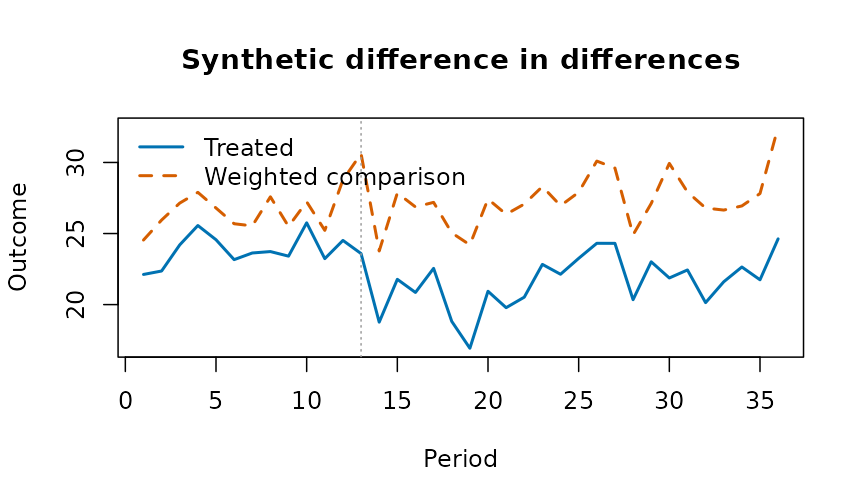
Null results without a measure of power.
plnpwr() simulates the design on the untreated data and
gives the minimum detectable effect:
pw <- plnpwr(p[p$month <= 12, ], "district", "month", "crmrate", ntrt = 10,
adopt = 7:10, eff = c(0, 0.5, 1, 1.5), reps = 40, seed = 1)
pw
#> effect power
#> 0.0 0.050
#> 0.5 0.475
#> 1.0 1.000
#> 1.5 1.000
#> Size (rejections with no effect): 0.050 at alpha 0.050
#> Minimum detectable effect at this power: 0.8095
plot(pw)
Indigenous examples
The methods here need a panel: units observed over time, some treated at a known date. The bundled Indigenous tables are repeated cross-sections of published estimates, so the before-and-after comparison they support is the change in a gap, with its interval:
hi <- indiex("health")
x <- hi[hi$age == "Total, 18 years and over" &
hi$indicator == "Perceived mental health, very good or excellent", ]
gaps <- do.call(rbind, lapply(split(x, x$period), function(p) {
cbind(period = p$period[1],
indgap(p, "group", "estimate", "lower", "upper")[
, c("group", "difference", "diflo", "difup")])
}))
rownames(gaps) <- NULL
gaps
#> period group difference diflo difup
#> 1 2015/2018 First Nations -10.8 -13.23311 -8.366895
#> 2 2015/2018 Métis -9.6 -12.03311 -7.166895
#> 3 2015/2018 Inuit -21.5 -27.31378 -15.686223
#> 4 2019/2022 First Nations -15.7 -18.53593 -12.864070
#> 5 2019/2022 Métis -8.7 -11.58531 -5.814692
#> 6 2019/2022 Inuit -13.7 -20.16568 -7.234321Perceived mental health fell for every group between the two cycles; whether the gaps moved is read from the intervals, not the point estimates.
Acknowledgements
These designs are those of the empirical work of Professor Angela Zorro Medina (University of Toronto) on criminal-procedure reform, political dynasties, police stops and the cumulative risk of criminal justice outcomes. The estimators themselves are the standard ones of the literature cited on each help page.
References
- Abadie A, Diamond A, Hainmueller J (2010). Synthetic control methods for comparative case studies. Journal of the American Statistical Association 105(490):493-505.
- Acosta C, Mejia D, Zorro Medina A (2023). On the tension between due process protection and public safety: the case of an extensive procedural reform in Colombia. SSRN 10.2139/ssrn.4585682.
- Callaway B, Sant’Anna PHC (2021). Difference-in-differences with multiple time periods. Journal of Econometrics 225(2):200-230.
- de Chaisemartin C, D’Haultfoeuille X (2020). Two-way fixed effects estimators with heterogeneous treatment effects. American Economic Review 110(9):2964-2996.
- Goodman-Bacon A (2021). Difference-in-differences with variation in treatment timing. Journal of Econometrics 225(2):254-277.
- Hepburn P, Kohler-Hausmann I, Zorro Medina A (2019). Cumulative risks of multiple criminal justice outcomes in New York City. Demography 56(3):1161-1171.
- Ternullo S, Zorro-Medina A, Vargas R (2024). How political dynasties concentrate advantage within cities. Social Forces 102(4):1310-1331.
- Westfall PH, Young SS (1993). Resampling-Based Multiple Testing. Wiley.
- Wooldridge JM (2021). Two-way fixed effects, the two-way Mundlak regression, and difference-in-differences estimators. SSRN 10.2139/ssrn.3906345.
- Zorro Medina A, Hackett D, Green D, Vargas R (2025). Evidence of donor bias in Chicago police stops. arXiv:2504.15140.
Falsification controls and power curves: is the statistic real?
A capsule can prove that a statistic was computed from exactly these bytes. It cannot, by itself, say whether the statistic means anything. Two complementary checks address that: a falsification control asks whether the statistic survives deliberate attempts to break it, and a power curve asks whether the procedure could have detected an effect of a given size at all. Both are borrowed from the refutation tests of causal-inference practice (placebo treatments, random subsets, permutation) and made to run on any statistic you can write as a function of the data.
Falsification controls
cpsfals() takes the data, a statistic (a function of the
data frame) and the name of the treatment column, and runs the controls
that a real association must pass:
- permutation: shuffle the treatment; the statistic should collapse toward its null;
- placebo: replace the treatment with noise; the statistic should collapse;
- subsets: recompute on random subsets; the statistic should stay stable.
set.seed(1)
d <- data.frame(x = rnorm(200))
d$y <- 0.8 * d$x + rnorm(200)
real <- cpsfals(d, function(z) cor(z$x, z$y), trt = "x", n = 199, seed = 42)
real$controls[, c("control", "passed")]
#> control passed
#> 1 permutation TRUE
#> 2 placebo TRUE
#> 3 random_common_cause TRUE
#> 4 subset_stability TRUEA statistic that ignores the data fails the controls that can see it. A constant “0.5” passes the subset check (it is perfectly stable) and fails the permutation check (it does not collapse when the treatment is destroyed):
fake <- cpsfals(d, function(z) 0.5, trt = "x", n = 199, seed = 42)
fake$controls[fake$controls$control == "permutation", "passed"]
#> [1] FALSEThis is the point of running controls rather than looking at a p-value: the p-value of a constant is undefined, but its behaviour under permutation is not.
Power curves
A null result is only informative if the procedure could have found
something. cpspwr() injects an effect of known size into
the data, re-runs the statistic with its permutation test, and reports
the detection rate at each size:
set.seed(1)
d <- data.frame(x = rnorm(120), y = rnorm(120))
inj <- function(z, size) {
z$y <- z$y + size * z$x
z
}
pw <- cpspwr(d, function(z) cor(z$x, z$y), inj,
sizes = c(0, 0.3, 0.6), trt = "x",
n = 99, reps = 5, seed = 42)
pw$curve
#> size detected reps rate
#> 1 0.0 0 5 0
#> 2 0.3 5 5 1
#> 3 0.6 5 5 1The rate at size 0 estimates the false-positive rate. With few repetitions it is usually 0, because alpha is small (five draws at 0.05 come up empty about three times in four), so read it as a sanity check that it is not large, not as an estimate of alpha:
pw$curve[pw$curve$size == 0, "rate"]
#> [1] 0Use more reps for a real study; the example keeps them
small so the vignette builds quickly. The curve answers the question a
reviewer will ask of a null finding: “what effect size would you have
detected with this data?”
Families of statistics: the multiple-testing correction
When several statistics are examined, the smallest p-value among them
is not the finding. falsfam() applies a multiple-testing
correction across a family of falsification results, so one real
association is still reported as real and the noise is not:
set.seed(1)
d <- data.frame(x = rnorm(150))
d$y <- 0.6 * d$x + rnorm(150)
d$a <- rnorm(150)
d$b <- rnorm(150)
fam <- list(
real = cpsfals(d, function(z) cor(z$x, z$y), trt = "x", n = 199, seed = 1),
noisea = cpsfals(d, function(z) cor(z$a, z$y), trt = "a", n = 199, seed = 2),
noiseb = cpsfals(d, function(z) cor(z$b, z$y), trt = "b", n = 199, seed = 3)
)
falsfam(fam)
#> ── Family of 3, corrected by holm at alpha 0.05 ──────────────────
#> real p 0.005 adjusted 0.015 survives
#> noisea p 0.955 adjusted 1
#> noiseb p 0.995 adjusted 1
#> ──────────────────────────────────────────────────────────────────
#> at the permutation floor (more permutations would be needed to say more): real
#> ──────────────────────────────────────────────────────────────────It also accepts bare p-values, which is what stops the smallest of several from being read as the finding:
Sensitivity to an unmeasured confounder
For an observed risk ratio, the E-value (VanderWeele and Ding 2017) is the minimum strength of association an unmeasured confounder would need with both treatment and outcome to explain the result away:
evlrr(2) # needs a confounder associated by 3.41 with both
#> evlpoint
#> 3.414214
evlrr(0.5) # a protective effect is inverted; same answer
#> evlpoint
#> 3.414214
evlrr(2, lo = 0.9, hi = 4.4) # an interval that includes the null needs nothing
#> evlpoint evllimit
#> 3.414214 1.000000
evlrr(3, lo = 2.1, hi = 4.3) # a strong result with a limit well above the null
#> evlpoint evllimit
#> 5.449490 3.619868Where this fits in a capsule
cpsrpt() runs the falsification controls alongside the
schema, rule and drift checks when a statistic is supplied, so the
capsule records not only that the number was computed from these bytes
but that it survived its controls. A pre-registered hypothesis
(prrgdecl(), prrgchk()) pins what was going to
be tested before the data were seen, which is the other half of keeping
a finding honest.
Several gaps, one family of tests
A report on Indigenous health usually tests many indicators at once.
falsfam() adjusts the family; here the differences from
non-Indigenous adults in 2019/2022 for First Nations adults, with z
statistics from the published 95 percent intervals:
hi <- indiex("health")
s <- hi[hi$period == "2019/2022" & hi$age == "Total, 18 years and over" &
hi$quality == "ok", ]
fn <- s[s$group == "First Nations", ]
ni <- s[s$group == "Non-Indigenous", ]
both <- merge(fn, ni, by = "indicator", suffixes = c("fn", "ni"))
se <- function(l, u) (u - l) / (2 * 1.96)
z <- (both$estimatefn - both$estimateni) /
sqrt(se(both$lowerfn, both$upperfn)^2 + se(both$lowerni, both$upperni)^2)
p <- stats::setNames(2 * stats::pnorm(-abs(z)), both$indicator)
res <- falsfam(p, meth = "holm")
head(res)
#> $results
#> name
#> 1 Current smoker, daily or occasional
#> 2 Current smoker, daily
#> 3 Perceived mental health, very good or excellent
#> 4 Perceived health, very good or excellent
#> 5 Anxiety disorder
#> 6 Body mass index, adjusted self-reported, adult, obese
#> 7 Mood disorder
#> 8 Perceived mental health, fair or poor
#> 9 Perceived health, fair or poor
#> 10 Heavy drinking
#> 11 Life satisfaction, satisfied or very satisfied
#> 12 At least one underlying chronic health condition
#> 13 Body mass index, adjusted self-reported, adult, overweight
#> 14 Has a regular healthcare provider
#> 15 Perceived mental health, good
#> 16 Perceived health, good
#> 17 Has ever had cancer
#> 18 Arthritis
#> 19 Sense of belonging to local community, somewhat strong or very strong
#> 20 Perceived life stress, most days quite a bit or extremely stressful
#> 21 Effects of a stroke
#> 22 Diabetes
#> 23 Two or more chronic health conditions
#> 24 High blood pressure
#> 25 Never had alcoholic drinks in the past 12 months
#> 26 Heart disease
#> p adjusted survives
#> 1 4.799378e-47 1.247838e-45 TRUE
#> 2 6.666055e-33 1.666514e-31 TRUE
#> 3 1.977723e-27 4.746535e-26 TRUE
#> 4 4.701772e-27 1.081408e-25 TRUE
#> 5 8.269913e-26 1.819381e-24 TRUE
#> 6 1.570439e-24 3.297922e-23 TRUE
#> 7 2.217733e-22 4.435465e-21 TRUE
#> 8 8.105074e-22 1.539964e-20 TRUE
#> 9 5.917920e-20 1.065226e-18 TRUE
#> 10 2.383432e-15 4.051834e-14 TRUE
#> 11 4.967275e-13 7.947640e-12 TRUE
#> 12 4.149245e-11 6.223867e-10 TRUE
#> 13 6.976248e-10 9.766747e-09 TRUE
#> 14 4.744043e-05 6.167256e-04 TRUE
#> 15 1.916130e-04 2.299356e-03 TRUE
#> 16 1.986114e-04 2.299356e-03 TRUE
#> 17 7.953428e-04 7.953428e-03 TRUE
#> 18 5.573725e-03 5.016352e-02 FALSE
#> 19 9.255276e-03 7.404220e-02 FALSE
#> 20 1.455855e-02 1.019099e-01 FALSE
#> 21 1.616352e-02 1.019099e-01 FALSE
#> 22 2.409857e-02 1.204929e-01 FALSE
#> 23 3.100005e-02 1.240002e-01 FALSE
#> 24 2.077056e-01 6.231168e-01 FALSE
#> 25 6.863741e-01 1.000000e+00 FALSE
#> 26 1.000000e+00 1.000000e+00 FALSE
#>
#> $method
#> [1] "holm"
#>
#> $famsz
#> [1] 26
#>
#> $alpha
#> [1] 0.05
#>
#> $atflr
#> character(0)The tests in a picture
plot() draws each result. For the real statistic, the
observed correlation stands far outside the correlations the permuted
tables give. The fake statistic returns 0.5 whatever the data, so every
permuted table also gives 0.5: the null collapses onto the observed
value, and the permutation control fails, as it should. The last panel
is the power of the test across injected effect sizes.
plot(real)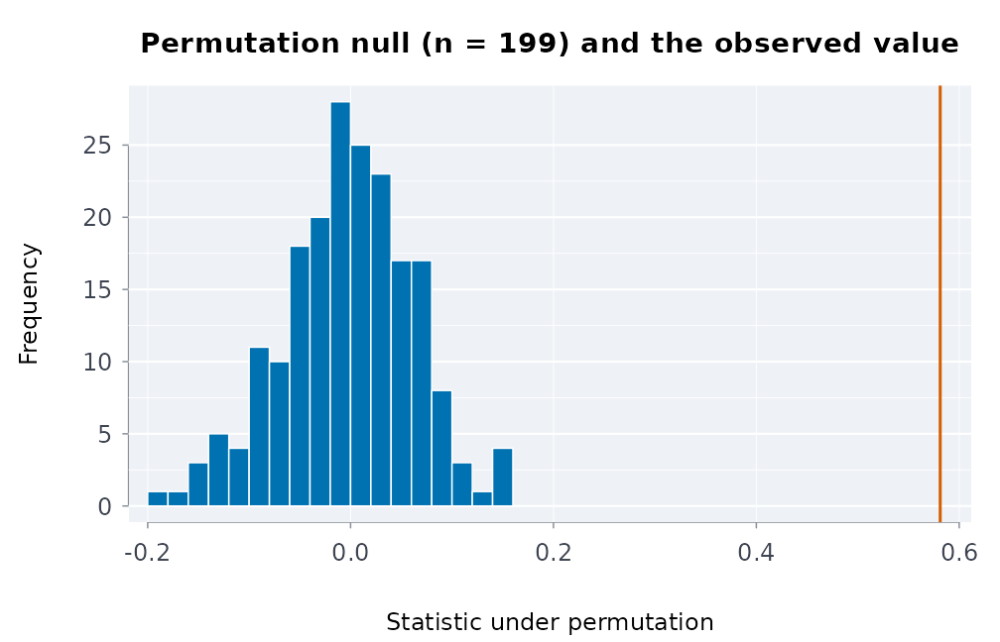
plot(fake)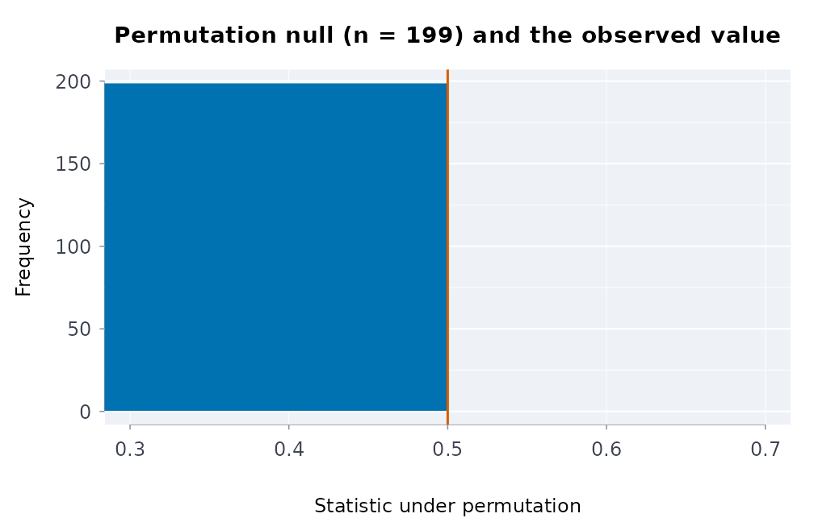
plot(pw)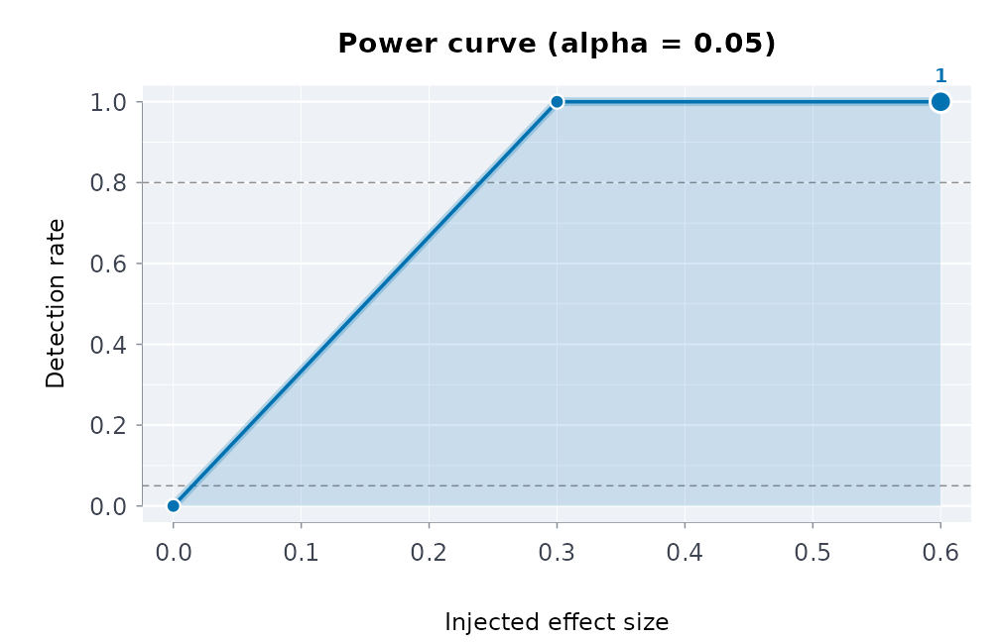
Small-area rates: expected counts, shrinkage, funnels and spatial autocorrelation
Published tables often give a count per region, division or facility. Comparing those counts fairly needs three steps: adjust for the population each unit serves (and its composition), stabilise the ratios of small units, and judge each unit against limits that widen as its expected count shrinks. This vignette walks the four tools that do that.
Expected counts by indirect standardisation
If the overall rate applied everywhere, how many events would each unit have? That is the expected count. Adjusting for size alone:
d <- data.frame(
region = rep(c("North", "South", "East"), each = 2),
age = rep(c("18 to 24", "25 to 49"), 3),
n = c(30, 45, 12, 60, 8, 20),
pop = c(1000, 6000, 900, 9000, 400, 3500)
)
expcnts(d$n, d$pop, d$region)
#> area observed population expected
#> 1 East 28 3900 32.81250
#> 2 North 75 7000 58.89423
#> 3 South 72 9900 83.29327Adjusting for size and age composition is indirect standardisation: each stratum’s overall rate is applied to the unit’s population in that stratum, then summed. This is the comparison that says something about the unit rather than about who lives there:
expcnts(d$n, d$pop, d$region, strata = d$age)
#> area observed population expected
#> 1 East 28 3900 32.34430
#> 2 North 75 7000 62.27967
#> 3 South 72 9900 80.37603Direct standardisation, for populations of different ages
Indirect standardisation asks what each unit would expect at the
overall rates. Direct standardisation asks what rate each population
would have with one standard age structure. It is the comparison to use
when the populations’ ages differ a great deal. First Nations, Metis and
Inuit populations, for example, are younger than the non-Indigenous
population. agestd() gives the rates with the Fay-Feuer
gamma interval, which holds for small counts. rategap()
compares two of them. The counts below are made up, to show the
computation:
r <- agestd(events = c(4, 9, 11, 6, 3, 40, 70, 90, 80, 60),
pop = c(9000, 8000, 6000, 4000, 2000, 300000, 320000, 350000, 340000, 300000),
std = c(30, 25, 20, 15, 10),
grp = rep(c("Inuit", "Non-Indigenous"), each = 5))
r
#> group events rate lower upper
#> 1 Inuit 33 115.62500 79.23967 165.0186
#> 2 Non-Indigenous 340 20.14102 17.93306 22.5839
rategap(r, "Inuit", "Non-Indigenous")
#> group reference ratio ratiolo ratioup difference diflo difup
#> 1 Inuit Non-Indigenous 5.740772 3.993798 8.25191 95.48398 55.54321 135.4247For survey percentages rather than counts, stdprev()
does the same.
Standardised ratios with exact intervals
The ratio of observed to expected is the standardised incidence ratio
(SIR). stdinc() gives the exact Poisson interval, which is
what makes a small count honest:
stdinc(obs = c(30, 12, 3), expd = c(20, 14, 5),
area = c("North", "South", "East"))
#> area observed expected sir lower upper excess deficit
#> 1 North 30 20 1.5000000 1.0120437 2.141343 TRUE FALSE
#> 2 South 12 14 0.8571429 0.4428982 1.497256 FALSE FALSE
#> 3 East 3 5 0.6000000 0.1237344 1.753455 FALSE FALSE
#> significant
#> 1 TRUE
#> 2 FALSE
#> 3 FALSEAn observed count of three carries almost no information, and the interval says so rather than hiding it:
stdinc(3, 5)
#> observed expected sir lower upper excess deficit significant
#> 1 3 5 0.6 0.1237344 1.753455 FALSE FALSE FALSEEmpirical Bayes shrinkage
A tiny unit’s raw ratio is extreme by chance. Empirical Bayes shrinks each ratio toward the overall experience in proportion to how little its own data say: the pooled ratios share a Gamma prior whose parameters are estimated from all units, and each unit’s posterior mean is a weighted average of its own ratio and the prior mean, weighted by its expected count (Clayton and Kaldor 1987).
ebrates(obs = c(30, 45, 2), expd = c(25, 50, 0.5),
area = c("North", "South", "Tiny"))
#> area observed expected sir eb shrinkage nu alpha
#> 1 North 30 25.0 1.2 1.1073869 0.5141392 26.98066 26.45506
#> 2 South 45 50.0 0.9 0.9414767 0.3460211 26.98066 26.45506
#> 3 Tiny 2 0.5 4.0 1.0751472 0.9814506 26.98066 26.45506The tiny area’s raw ratio of 4 is pulled sharply toward 1; the large areas barely move.
Funnel plots
A funnel plot draws control limits that narrow as the expected count grows (Spiegelhalter 2005): a ratio of 2 means nothing at an expected count of 2 and a great deal at 200. Units outside the limits are the ones worth a second look; the rest are consistent with the common rate.
fnllim(c(2, 20, 200))
#> expected level lower upper
#> 1 2 0.950 0.000 2.500
#> 2 20 0.950 0.600 1.450
#> 3 200 0.950 0.865 1.140
#> 4 2 0.998 0.000 4.000
#> 5 20 0.998 0.400 1.750
#> 6 200 0.998 0.790 1.225
e <- seq(2, 200, length.out = 60)
lim <- fnllim(e)
plot(e, lim$upper_95, type = "l", ylim = c(0, 3), xlab = "expected count",
ylab = "observed / expected", main = "Funnel limits")
lines(e, lim$lower_95)
lines(e, lim$upper_998, lty = 2)
lines(e, lim$lower_998, lty = 2)
abline(h = 1, col = "grey")
points(c(20, 14, 5), c(30, 12, 3) / c(20, 14, 5), pch = 19, col = 2)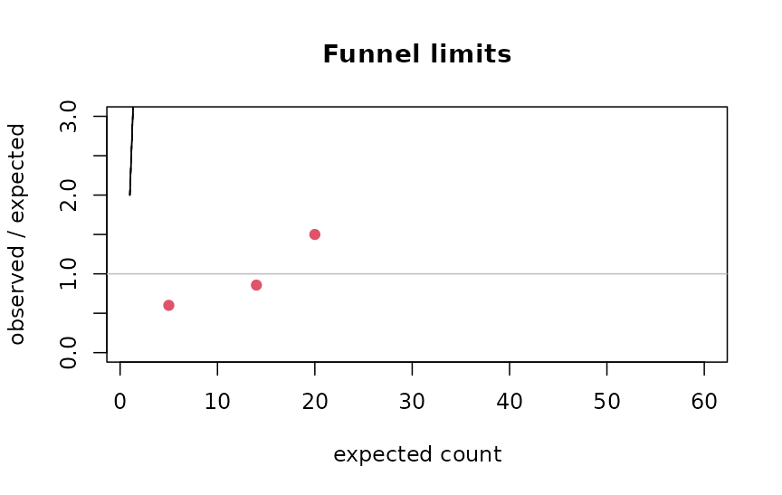
The levels argument sets which limits are drawn; 95% and
99.8% (about two and three standard deviations) are the conventional
pair.
Spatial autocorrelation
Rates of neighbouring areas are rarely independent. Moran’s
I measures whether similar values cluster in space, against a
permutation null; neighbours is a list giving each area’s
adjacent areas:
nb <- list(2L, c(1L, 3L), c(2L, 4L), c(3L, 5L), c(4L, 6L), 5L) # six areas in a line
set.seed(1)
morani(c(1, 2, 3, 4, 5, 6), nb, nperm = 999L)[c("I", "p_value")] # a gradient
#> $I
#> [1] 0.7142857
#>
#> $p_value
#> [1] 0.011
set.seed(1)
morani(c(1, 6, 1, 6, 1, 6), nb, nperm = 999L)[c("I", "p_value")] # alternating
#> $I
#> [1] -1
#>
#> $p_value
#> [1] 0.199The null expectation of I is not zero but :
-1 / (6 - 1)
#> [1] -0.2Positive autocorrelation in the residual ratios means neighbouring units share something the standardisation did not capture, and a funnel that treats them as independent is optimistic.
References
Clayton, Kaldor (1987). Empirical Bayes estimates of age-standardized relative risks for use in disease mapping. Biometrics 43(3). Spiegelhalter (2005). Funnel plots for comparing institutional performance. Statistics in Medicine 24(8). Moran (1950). Notes on continuous stochastic phenomena. Biometrika 37(1/2).
Hawkes processes: self-exciting event series
Many administrative event series cluster: one incident raises the chance of another soon after. A Hawkes process (Hawkes 1971) models this directly. Its conditional intensity, the instantaneous event rate given the past, is
a baseline rate plus a kernel that each past event adds and that decays with the time since it. The integral of the kernel, , is the branching ratio: the expected number of events each event directly triggers. When the process is stationary; is the fraction of events that are “children” of earlier events rather than arrivals from the baseline, which is often the quantity of substantive interest.
Simulating a Hawkes process
Ogata’s thinning algorithm simulates the process exactly: propose events from an upper bound on the intensity and keep each with probability . Here is an exponential kernel , whose branching ratio is :
simhwk <- function(mu, alpha, beta, horizon, seed = 1) {
set.seed(seed)
t <- 0
events <- numeric(0)
while (t < horizon) {
lambdamax <- mu + alpha * beta * sum(exp(-beta * (t - events)))
t <- t + stats::rexp(1, lambdamax)
if (t >= horizon) break
lambdat <- mu + alpha * beta * sum(exp(-beta * (t - events)))
if (stats::runif(1) <= lambdat / lambdamax) events <- c(events, t)
}
events
}
times <- simhwk(mu = 1, alpha = 0.5, beta = 2, horizon = 300)
length(times)
#> [1] 559Fitting
chwkfit() maximises the exact log-likelihood with an
analytic gradient in C (projected BFGS, with the parameters bounded).
theta holds the baseline, the branching ratio and the
kernel parameter:
fit <- chwkfit(times, hor = 300, kernel = "exponential")
fit$theta
#> [1] 0.1027148 0.4073514 2.1590220
fit$braratio
#> [1] 0.4073514The branching ratio is recovered close to the 0.5 the data were
simulated with, and the baseline close to 1. Four kernels are available:
exponential (memoryless decay), weibull and
gamma (a delayed peak), lomax (a heavy tail:
influence that fades slowly). Compare them by information criterion:
sapply(c("exponential", "weibull", "lomax"), function(k) {
chwkfit(times, 300, kernel = k)$aic
})
#> exponential weibull lomax
#> 352.1139 353.6296 354.1802A sinusoidal baseline lets the background rate follow a cycle (a weekly or seasonal pattern) instead of staying constant:
chwkfit(times, 300, kernel = "exponential", base = "sinusoidal")$aic
#> [1] 352.3058Checking the fit: time-rescaling residuals
If the fitted intensity is right, the compensator
turns the event times into a unit-rate Poisson process (the
time-rescaling theorem; Brown et al. 2002). chwkres()
returns the rescaled inter-event quantities, which should then be
uniform:
U <- chwkres(times, 300, "exponential", fit$theta)
stats::ks.test(U, "punif")$p.value
#> [1] 0.8168762
plot(stats::qunif(stats::ppoints(length(U))), sort(U), pch = 20, cex = .6,
xlab = "uniform quantiles", ylab = "rescaled residuals",
main = "Time-rescaling check")
abline(0, 1, col = 2)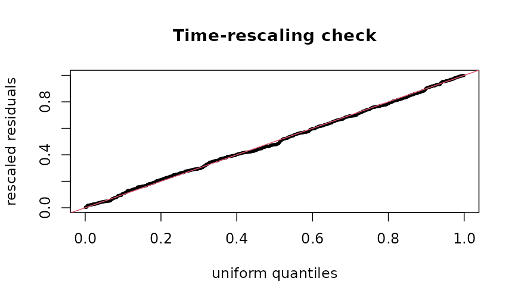
A misspecified kernel shows as a departure from the diagonal; a p-value well below 0.05 says the model does not explain the clustering it was fitted to.
Events recorded to a resolution
Administrative data record dates, not instants. Many events on one
day are ties, and a Hawkes likelihood with tied times is
ill-defined (the kernel at lag zero). chwkjit() spreads
each day’s events uniformly across that day, deterministically from a
seed, so the fit is reproducible and no two events coincide:
days <- c(0, 0, 0, 1, 3, 3)
chwkjit(days)
#> [1] 0.1599104 0.2786011 0.7415649 1.3441907 3.0380302 3.8682281
anyDuplicated(chwkjit(days))
#> [1] 0Fit on jittered times, and treat the day as the unit of the horizon.
Evaluating a likelihood directly
chwknll() returns the negative log-likelihood at given
parameters, for profile plots, likelihood-ratio comparisons or a check
against another implementation:
Boundaries and identifiability
A heavy-tailed kernel that tends to its exponential limit has a shape
parameter that is not identified; the fit then stops at the parameter
bound and says so (fit$atbound), instead of reporting an
absurd estimate. Short series carry little information about the
kernel’s shape: with a few hundred events, compare kernels by AIC but do
not read much into the third decimal of a shape parameter.
Indigenous examples
Self-exciting models need event times (one row per event), which the
published Indigenous health tables do not contain: they are counts and
percentages. The bundled tables are used for gaps, trends and
standardisation in vignette("applied-analyses"); a Hawkes
model applies once event-level data are available under a community’s
own data governance.
References
Hawkes (1971). Spectra of some self-exciting and mutually exciting point processes. Biometrika 58(1). Ogata (1981). On Lewis’ simulation method for point processes. IEEE Trans. Inf. Theory. Brown, Barbieri, Ventura, Kass, Frank (2002). The time-rescaling theorem and its application to neural spike train data analysis. Neural Computation 14(2).
Stock and flow: population, admissions and length of stay
A custodial or clinical population can be described two ways: the stock (how many are held on an average day) and the flow (how many pass through in a period). The two are linked by the length of stay, and a published table that reports one without the others is easy to misread. These functions implement the standard measures (Lakner’s formulation, as used in the Canadian corrections statistics) with exact intervals.
Average daily population
The stock. Detention days in a period divided by the days in the period:
# Lakner's worked example: 3,000 inmates served 13,500 detention days in a year
adp(13500)
#> [1] 36.9863
# per-person days over a 30-day period give the same total
adp(c(10, 20, 30), t = 30)
#> [1] 2adpcnts() estimates person-days from periodic headcounts
(a monthly census) when daily data are not published.
Average length of stay
Detention days divided by the number of people who completed a stay:
# Lakner: 2,700 inmates admitted and released served 12,150 detention days
alos(12150, 2700)
#> [1] 4.5Admissions implied by stock and stay
Little’s law ties the three together: in a stationary system, stock = flow × stay, so admissions = ADP × days / ALOS. Lakner (p. 20) runs it the other way: an average daily population of 25 and 1,750 admissions in a year imply a stay of 5.2 days, and back again:
Stock and flow together
stkflow() takes detention days and people per period,
with an exposure (the population at risk) to turn counts into rates, and
reports how the stock, the flow and the stay moved between periods. The
pattern it is built to surface: fewer people, held
longer, so the flow falls while the stock rises.
stkflow(
days = c(115674, 126121), people = c(12647, 9608),
prd = c("2023", "2025"),
expo = c(15495050, 16256538)
)
#> ── Stock and flow over 2 periods ─────────────────────────────────
#> period people days alos adp flowrate stkrate
#> 2023 12647 115674 9.146359 316.9151 81.61961 2.045267
#> 2025 9608 126121 13.126665 345.5370 59.10237 2.125526
#>
#> 2023 to 2025: people -24.0%, stay +43.5%, days +9.0%
#> flow rate -27.6%, stock rate +3.9% <- opposite signs: quote both
#> ──────────────────────────────────────────────────────────────────A table that reported only admissions would show a decline; one that reported only the daily count would show growth. Both are true, and the length of stay is the reason.
The distribution of stays
The mean stay is pulled far above the median by a few long stays, so the summary that matters is the whole distribution:
stays <- c(rep(1, 40), rep(3, 30), rep(10, 20), 60, 90, 120)
staysmry(stays)
#> n totaldays mean sd median iqr max se lower upper
#> 1 93 600 6.451613 16.33183 3 2 120 1.693532 3.088113 9.815113
staysmry(stays)[, c("mean", "median", "max")]
#> mean median max
#> 1 6.451613 3 120staysmry() gives the mean with its interval, the
quantiles and the maximum, so a report can say “half of stays were three
days or less, and the longest was 120” instead of “the average stay was
9.6 days”, which describes almost no one.
Indigenous examples
Stock and flow measures need counts of people and the days they spend in custody or care. The census excerpt bundled with the package counts foster children, a stock on census day:
cp <- indiex("censuspop")
fc <- cp[cp$GEO_NAME == "Canada" & cp$AGE_GROUP == "0 to 14 years" &
cp$RESIDENCE == "Total - Residence on or off reserve", ]
kids <- fc[grepl("Total - Children in census families", fc$CHARACTERISTIC_NAME),
c("FIRST_NATIONS", "NON_IND")]
fost <- fc[grepl("Foster children", fc$CHARACTERISTIC_NAME), c("FIRST_NATIONS", "NON_IND")]
round(100 * unlist(fost) / unlist(kids), 2)
#> FIRST_NATIONS NON_IND
#> 4.42 0.23Turning that stock into admissions and lengths of stay needs the flow data held by child welfare agencies.
The figures in a picture
The left panel puts the counts on a common footing: children in foster care per 1,000 children, First Nations and non-Indigenous, from the census tables above. The right panel shows how the lengths of stay are spread: most are short, a few are very long, which is why the mean and the median differ.
op <- par(mfrow = c(1, 2))
per1000 <- unlist(fost) / unlist(kids) * 1000
barplot(per1000, names.arg = c("First Nations", "non-Indigenous"), col = blpal()[1:2],
ylab = "per 1,000 children", main = "Children in foster care")
hist(stays, breaks = 30, col = blpal()[2], xlab = "length of stay", main = "Lengths of stay")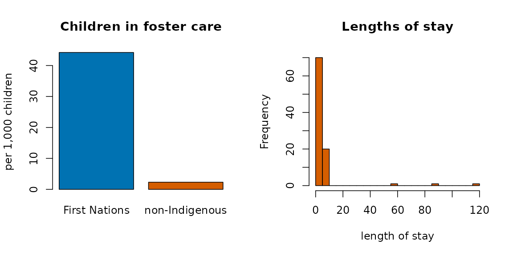
par(op)